🤝 Leadership & Community Activities
Yayasan Miftahul Ilmi Al Fikri
Role: Founder & Coordinator
Period: 2018 – 2025 (activities paused due to limited funding; foundation still registered)
As the founder, I developed all program concepts and provided the premises including land, prayer hall, and learning facilities under my personal ownership. I secured funding, covering most expenses and teachers’ stipends from my own means, while also raising additional support from private donors. Operations were paused in 2025 due to lack of ongoing funding, while the legal entity remains active. This role built strong leadership, planning, and resource management skills.
📜 Official Documents: Yayasan Miftahul Ilmi Al Fikri is legally registered through a Notarial Deed of Establishment. Other official documents are kept confidential for legal and privacy reasons, and will be provided upon formal request.
Yayasan Miftahul Ilmi Al Fikri is a non-profit community initiative dedicated to providing accessible religious education, moral guidance, and social support for children, youth, and families in the local area. It operates from private premises owned personally, functioning as a center for learning, knowledge sharing, and mutual assistance.
The main activities carried out at Yayasan Miftahul Ilmi Al Fikri are as follows:
🕌Place of Activity
Activities were conducted at the musalla and private residence, used for religious education, study sessions, and community gatherings. Photos of the location are shown below.
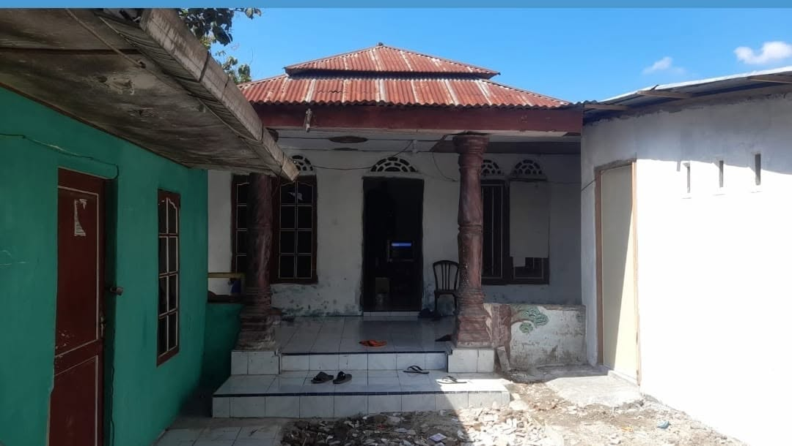
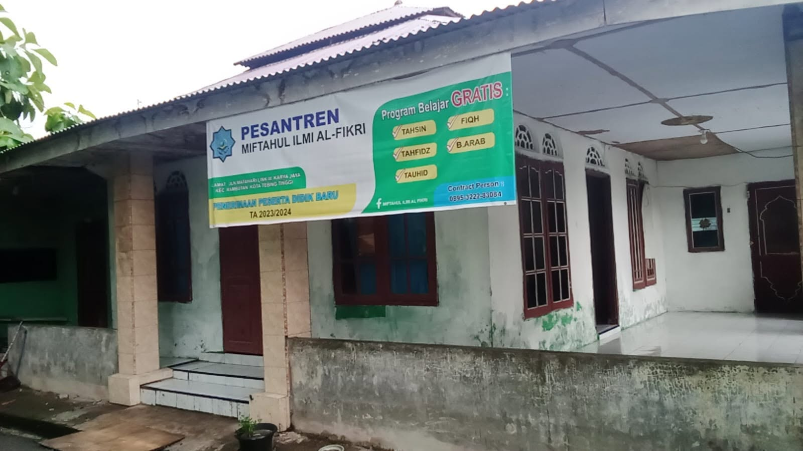
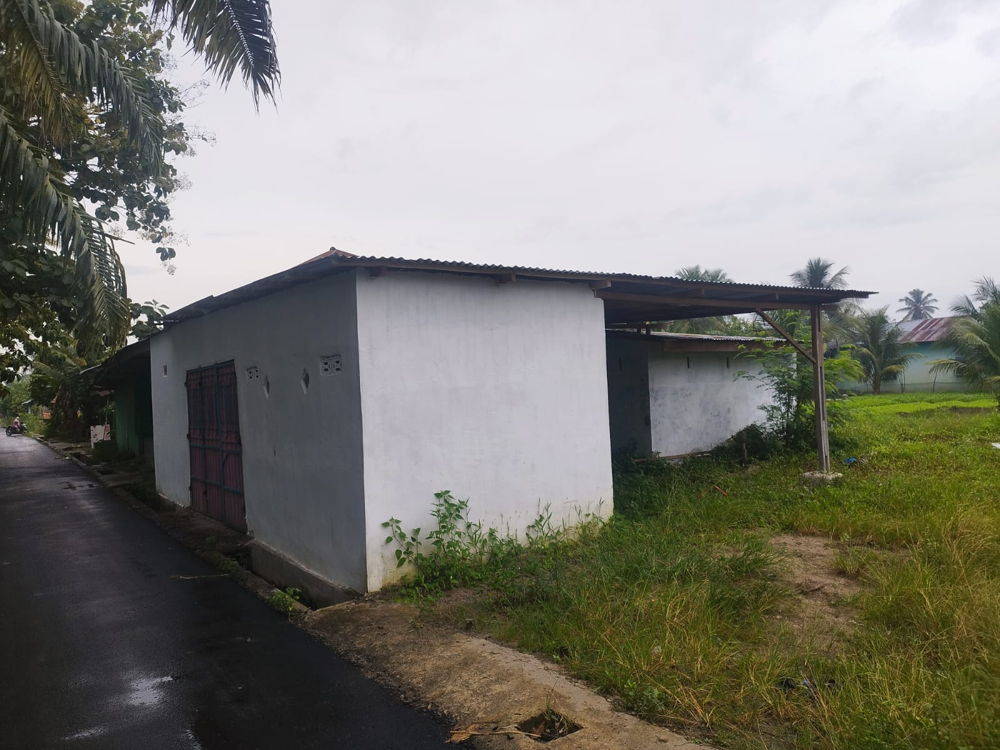
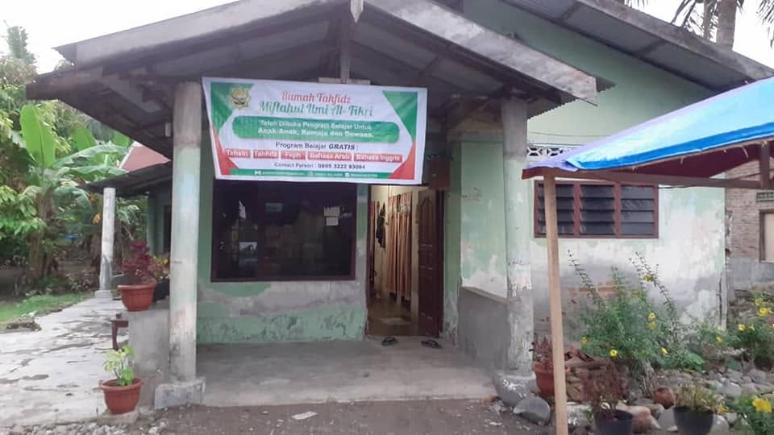
📚 After-School Quran & Religious Education
Designed for children aged 6 to 12 years (elementary school level). Classes are held every afternoon after their regular school hours. The program includes: learning to read and write the Quran correctly, memorizing short chapters, understanding the meaning of verses, moral values, daily ethics, and basic Islamic jurisprudence (Fiqh). All books, materials, and guidance are provided completely free of charge, with no fees required from participants.
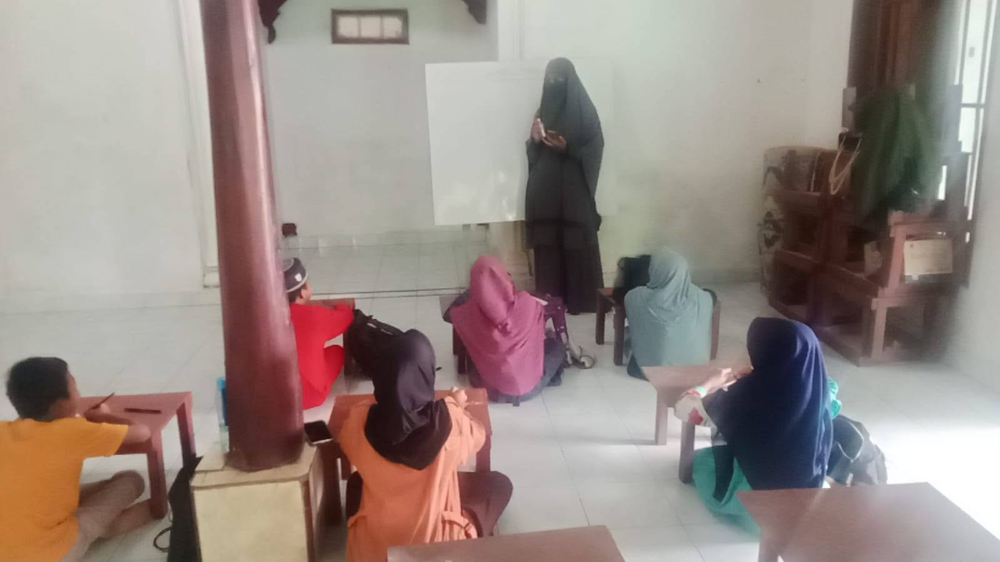
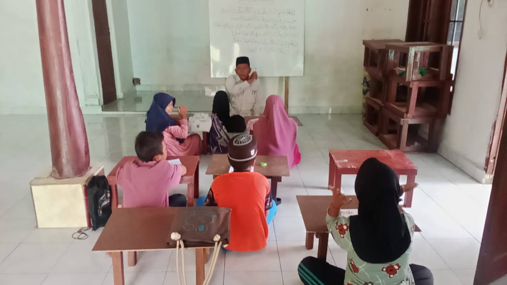
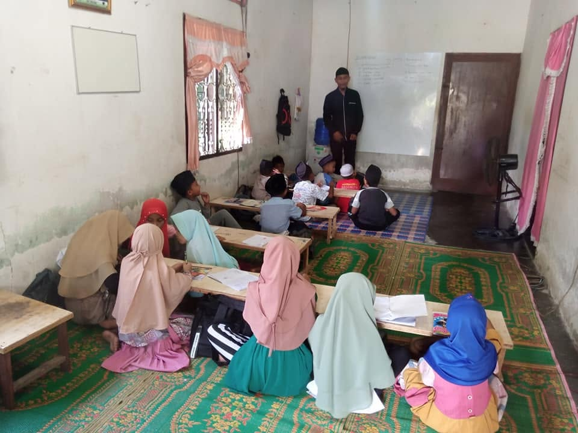
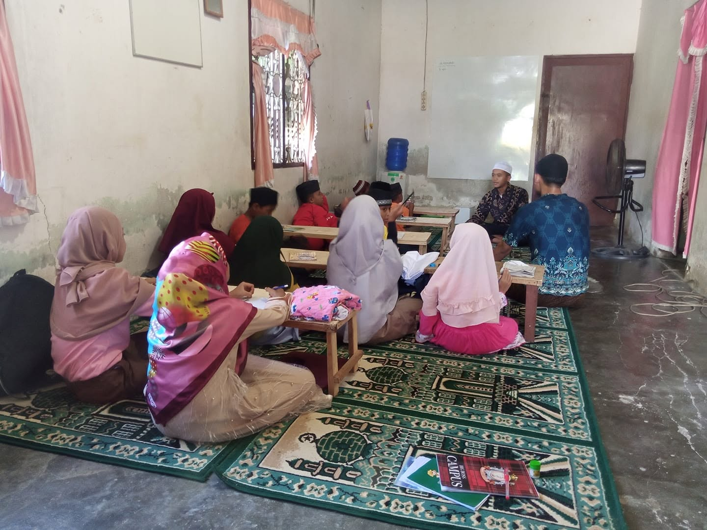
🕌 Short Ramadan Education Program (Pesantren Kilat)
Organized annually during the holy month of Ramadan, specifically for elementary school children. Activities include Quran recitation, memorization, religious lessons, and group activities. At the end of the program, rewards and small gifts are given to participants with good attendance, discipline, and learning progress. The aim is to strengthen knowledge and character during Ramadan.
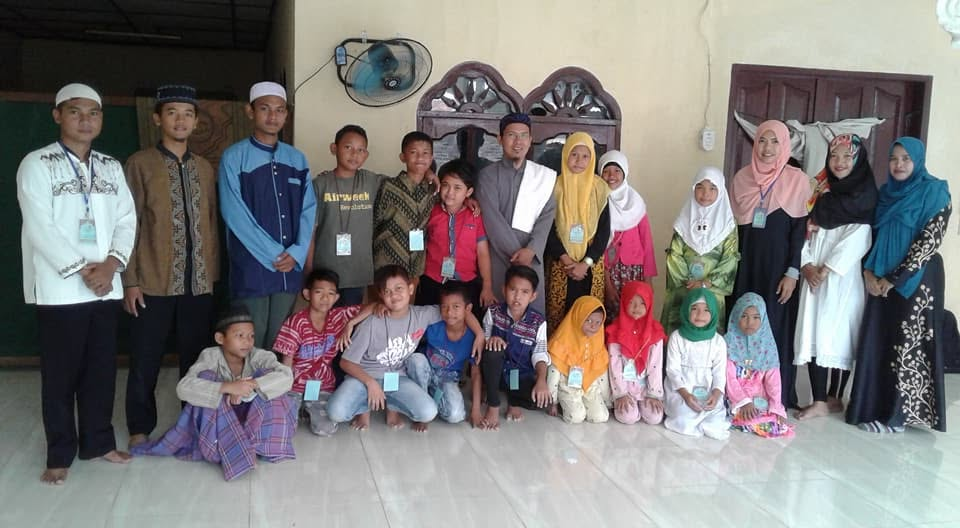
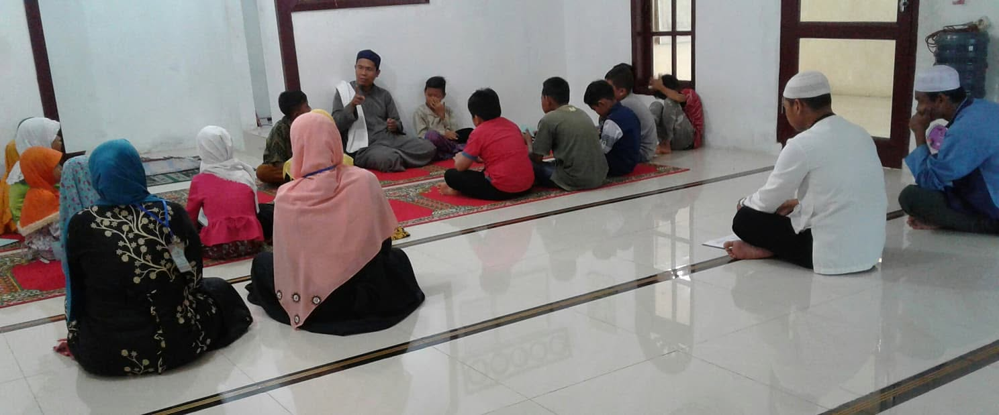
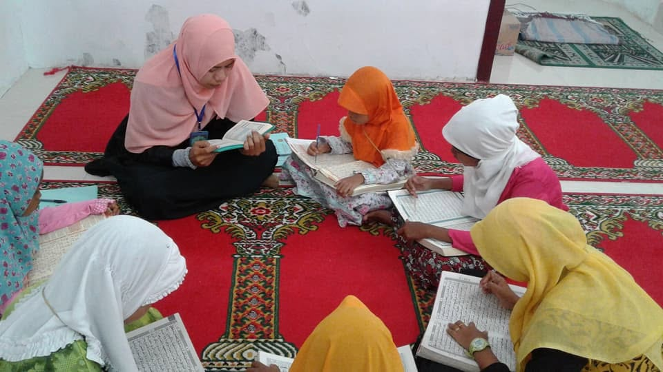
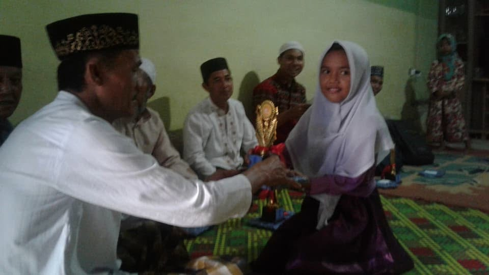
🗣️ Religious Study Gatherings for Tenager & Adults
Periodic study sessions and lectures held 3 times Classes in a week for tenager and 1–2 times per month for adults in the community. Topics include religious understanding, ethics, family values, and social responsibility. These gatherings help share knowledge, strengthen neighborhood bonds, and promote positive social behavior.
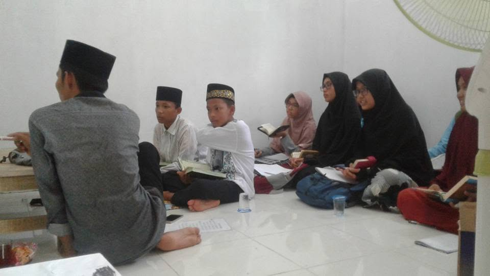
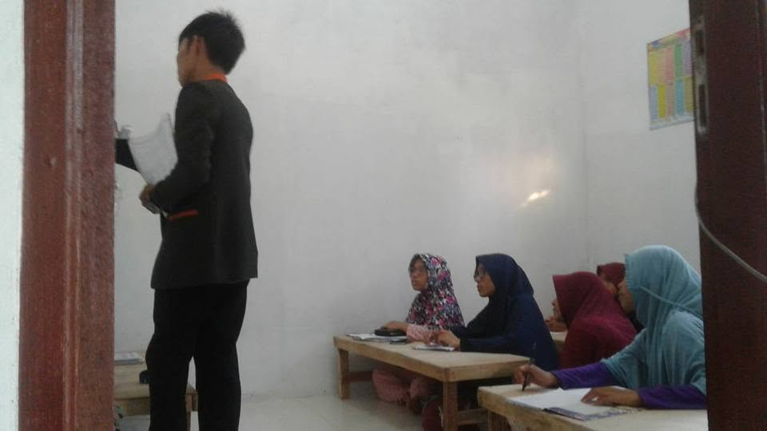
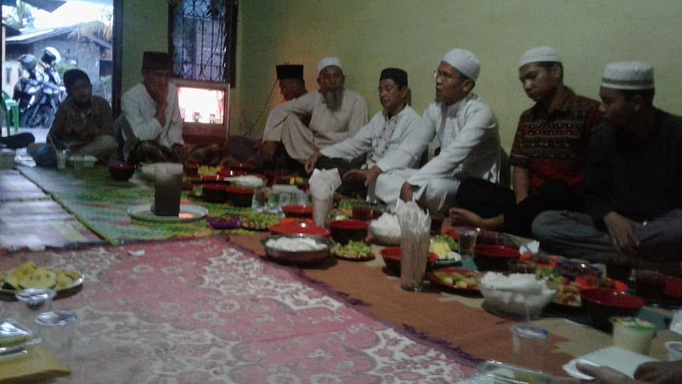
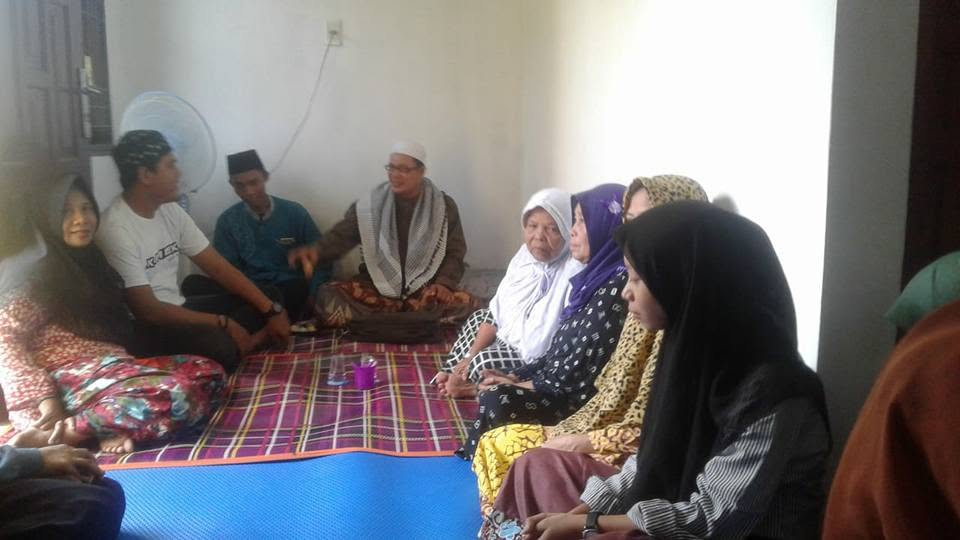
🎁 Distribution of Food Packages & Basic Necessities
Regular distribution of food packages and daily essential items to low-income families, elderly people, and those in need. This activity runs throughout the year, especially before religious holidays, and is fully funded by personal savings and donations from private supporters.
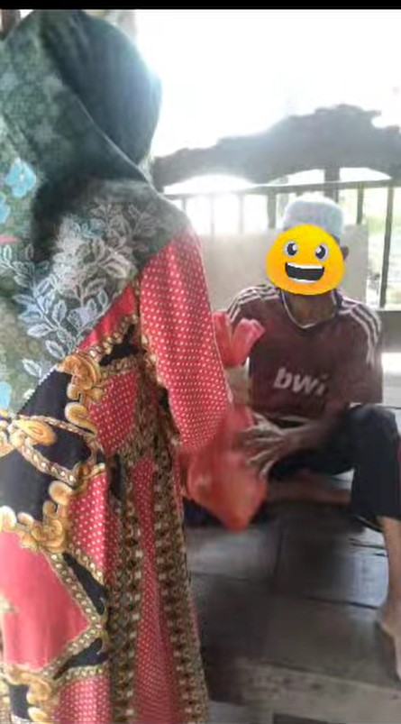
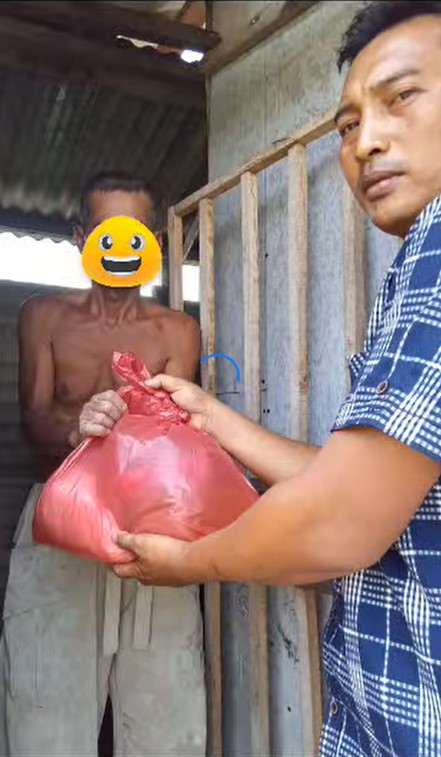
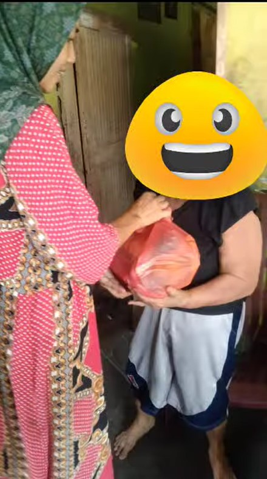
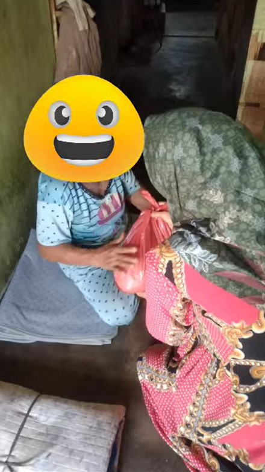